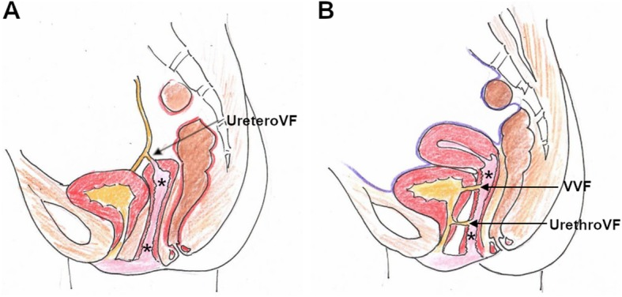
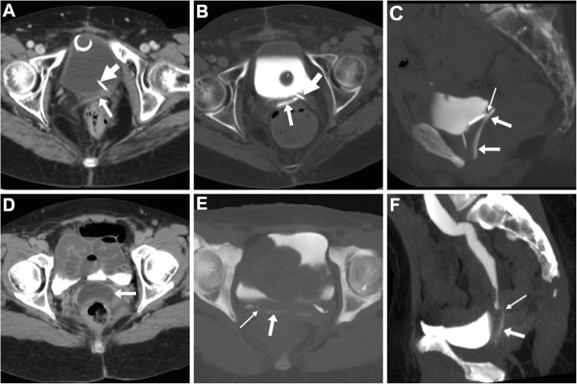
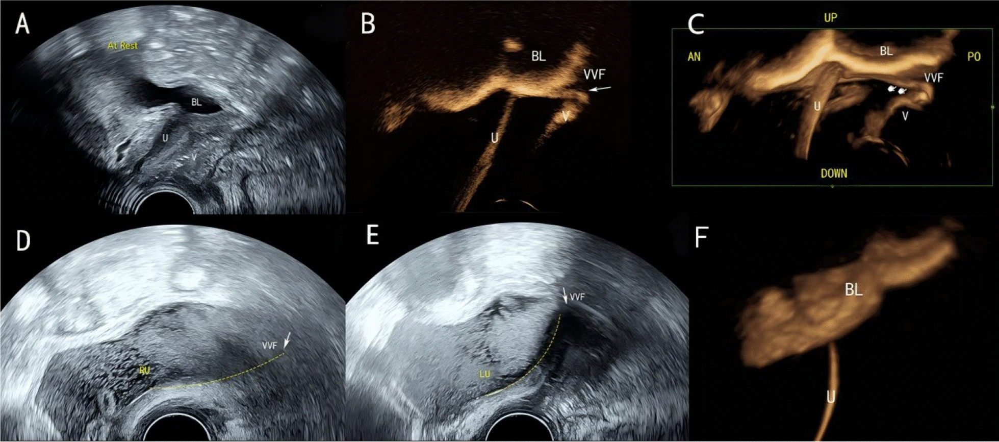
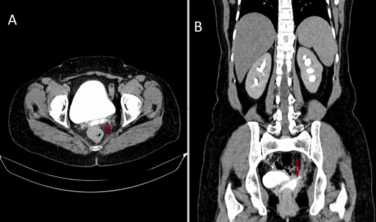
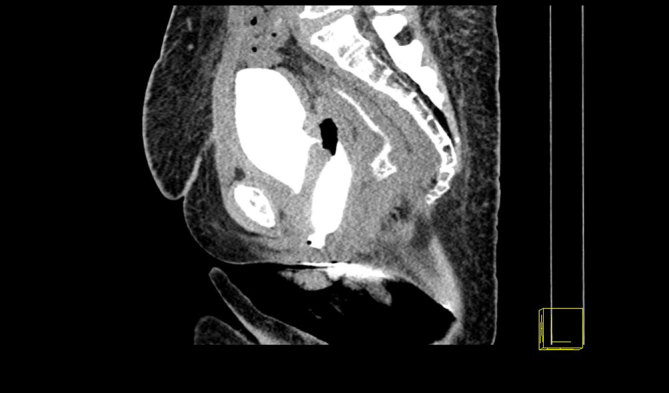

564 — Rò bàng quang–âm đạo & rò niệu quản–âm đạo sau mổ phụ khoa: phân biệt bằng 3 bông – creatinine – CT urography thì muộn, và chọn đường mổ
Tags: pattern:ro-nieu-sinh-duc pattern:ro-bang-quang-am-dao pattern:ro-nieu-quan-am-dao vung:am-dao vung:bang-quang vung:khung-chau score:Goh protocol:CT-urography protocol:CT-cystography protocol:IC-CEUS protocol:nghiem-phap-3-bong
Mức chắc chắn (certainty): tổng hợp y văn (literature synthesis) — tổng hợp từ 1 bài tổng quan có ảnh mở về kỹ thuật CT/MRI rò âm đạo (Tonolini 2019), 1 tổng quan về tổn thương niệu trong mổ phụ khoa (Arcieri 2025), 1 phân tích 23.404 ca cắt tử cung tận gốc (Liang 2023), 2 loạt ca lớn về rò bàng quang–âm đạo (Ni 2026) và rò niệu quản–âm đạo (Kajabwangu 2024), 1 nghiên cứu về đặt stent DJ (Kumar 2025), 1 nghiên cứu kỹ thuật siêu âm cản quang trong ổ (Lou 2026) và 2 ca nguyên văn có ảnh CT mở; mọi số liệu đối chiếu trực tiếp PMCID ghi trong sources.md.
1. Tổng quan bệnh học – cơ chế hình ảnh
- Định nghĩa: rò niệu–sinh dục (urinary–genital fistula) là đường thông bất thường giữa đường tiết niệu dưới và âm đạo. Ba thể phải phân biệt trong một bài: rò bàng quang–âm đạo (vesicovaginal fistula – VVF), rò niệu quản–âm đạo (ureterovaginal fistula – UVF) và rò niệu đạo–âm đạo (urethrovaginal fistula). Triệu chứng chung là rỉ nước tiểu liên tục qua âm đạo, nhưng cơ chế, hình ảnh và đường mổ khác nhau hoàn toàn.
- Dịch tễ (số liệu định lượng):
- Mổ phụ khoa chiếm > 50% tổng số tổn thương niệu do thủ thuật; niệu khoa ~30%, tiêu hóa 5–15%.
- Thương tổn bàng quang: 0,24% ở mổ lành tính và 0,4–3,7% ở mổ ung thư. Thương tổn niệu quản: 0,08% (lành tính) và 0,39–1,1% (ung thư).
- Sau cắt tử cung: VVF ~0,8%, UVF ~0,16%.
- Sau cắt tử cung tận gốc vì ung thư cổ tử cung (23.404 ca): rò niệu–sinh dục 1,04%, trong đó UVF 0,64% và VVF 0,34% — nghĩa là UVF chiếm 61,8%, ngược với cảm giác "VVF là chính" ở mổ lành tính.
- Thời điểm xuất hiện — mấu chốt để không bỏ sót: triệu chứng khởi phát trung vị 11 ngày (IQR 7–17) với UVF và 17 ngày (IQR 10,3–30,8) với VVF sau cắt tử cung tận gốc. Tổn thương do nhiệt (thermal injury) được chẩn đoán muộn trung bình 12 ngày. Chỉ 8,6% tổn thương niệu quản được nhận ra ngay trong mổ, so với 85% tổn thương bàng quang — vì vậy niệu quản là "kẻ giấu mặt".
- Cơ chế (vì sao rò hình thành):
- Thiếu máu – hoại tử vách: chỉ khâu giữa vòm âm đạo và mặt sau bàng quang, hoặc đốt điện lan nhiệt (thành bàng quang chỉ 2–3 mm, niệu quản 6–10 mm, bao niệu quản 2,5 mm) → hoại tử chậm, thủng sau 5–14 ngày.
- Sau xạ trị: giảm tưới máu, xơ hóa, mô giòn → rò xuất hiện muộn hơn, khó vá hơn, tái phát cao.
- Sau cắt tử cung tận gốc: bóc tách quanh niệu quản + cắt dây chằng ngang cổ tử cung → UVF; bóc tách bàng quang → VVF.
- TẠI SAO hình ảnh trông như vậy (vật lý + mô bệnh):
- Nước tiểu trên CT không cản quang gần như nước (0–20 HU) → đường rò vô hình. Khi có iod cản quang được thải qua thận, nước tiểu trong lòng rò tăng đậm độ rất mạnh, nên chỉ thì bài tiết (excretory phase) mới thấy rò. Đây là lý do một lát cắt 3 phút có thể âm tính giả trong khi lát 15 phút đã thấy rõ (ca nguyên văn PMC9692200): thời điểm chụp quan trọng hơn số lát cắt.
- Trên MRI: nước tiểu T2 tăng tín hiệu và T1 giảm; mô xơ thành rò T2 giảm và ngấm thuốc thì muộn. Nếu ứ mủ (pyocolpos) → hạn chế khuếch tán (DWI sáng, ADC thấp) và viền ngấm.
- Trên siêu âm: khí trong bàng quang và microbubble cản quang làm tăng tương phản giữa lòng bàng quang và đường rò; dòng cản quang xuất hiện 5–15 giây sau bơm vào bàng quang là dấu hiệu trực tiếp.
- Sinh hóa: creatinine dịch âm đạo cao hơn creatinine huyết thanh xác nhận dịch là nước tiểu (không cần chờ hình ảnh).
2. Mẫu hình + chẩn đoán phân biệt theo vị trí (gamut)
- Mẫu hình A — rỉ nước tiểu liên tục nhưng vẫn "đi tiểu" được bình thường: nghĩ UVF (niệu quản còn dẫn nước tiểu xuống bàng quang, nhưng một phần chảy vào âm đạo). Đây là câu hỏi phân loại đầu tiên và quan trọng nhất.
- Mẫu hình B — rỉ liên tục, không giữ được nước tiểu, bàng quang luôn rỗng: nghĩ VVF; nếu lỗ rò ở tam giác/bàng quang cổ (thấp) → đường âm đạo (Latzko); nếu trên gờ liên niệu quản (cao) → đường bụng/nội soi ổ bụng.
- Mẫu hình C — rỉ nước tiểu + đau hông lưng + giãn đài bể thận một bên: nghĩ UVF có tắc/ hẹp niệu quản kèm theo; phải đánh giá chức năng thận trước khi bàn vá rò.
- Mẫu hình D — rỉ nước tiểu ngay sau sinh/mổ lấy thai, kèm rách âm đạo: nghĩ rò niệu đạo–âm đạo hoặc tổn thương niệu đạo; khác hoàn toàn về đường mổ.
- Mẫu hình E — rò phức tạp sau xạ trị: nhiều lỗ, mô xơ, có thể kèm rò trực tràng–âm đạo (25% ca rò sau xạ trong loạt Ni 2026); thành âm đạo hẹp < 3 cm là tiêu chí không thể vá qua đường âm đạo.
- Mẫu hình F — "khối dịch tiểu khung" sau mổ: urinoma (nước tiểu tụ ngoài đường niệu) — chưa phải rò, nhưng là tiền thân; cần phân biệt với lymphocele (không có creatinine cao) và áp-xe (sốt, khí, viền ngấm).
- Gợi nhớ lâm sàng 4 câu hỏi: (1) rỉ liên tục hay từng cơn? (2) vẫn tiểu tự nhiên được không? (3) đau hông lưng / sốt? (4) đã xạ trị chưa? — bốn câu này định hình cả gamut và đường mổ.

Hình (A): rò niệu quản–âm đạo — đường rò đi từ niệu quản đoạn xa vào vòm âm đạo (mũi tên), tử cung đã mất. Hình (B): rò bàng quang–âm đạo và rò niệu đạo–âm đạo. Dấu * = lòng âm đạo; vàng = nước tiểu. Vị trí lỗ rò quyết định đường mổ: thấp → âm đạo, cao → bụng. Nguồn: Tonolini M, Insights Imaging 2019, CC BY 4.0.3. Bảng so sánh phân biệt (ma trận đối chiếu)
| Thực thể (entity) | Hình ảnh điển hình | Chốt vào (rule-in) | Chốt loại (rule-out) | Gợi ý xác nhận |
|---|---|---|---|---|
| VVF (rò bàng quang–âm đạo) | CT cystography/CTU: nước tiểu cản quang trong âm đạo, đường rò từ mặt sau bàng quang tới vòm âm đạo; bông/gạc âm đạo ngấm cản quang | Bàng quang rỗng + rỉ liên tục + bông âm đạo xanh khi bơm methylene blue vào bàng quang | Niệu quản giãn + vẫn tiểu tự nhiên → nghĩ UVF, không phải VVF | Soi bàng quang thấy lỗ rò; CT cystography bơm cản quang 8–10% |
| UVF (rò niệu quản–âm đạo) | CTU thì bài tiết muộn 15–30 phút: cản quang từ niệu quản chảy vào vòm âm đạo; đài bể thận bên tổn thương giãn | Vẫn tiểu tự nhiên + nghiệm pháp 3 bông: bông trên cùng ướt nhưng KHÔNG xanh; sau đó xanh khi tiêm indigo carmine tĩnh mạch | Bông xanh ngay khi bơm vào bàng quang → VVF, không phải UVF | CTU 15 phút + đặt tư thế nằm sấp; chụp bàng quang ngược dòng âm tính |
| Rò niệu đạo–âm đạo | Cản quang trong niệu đạo → âm đạo; thường kèm hẹp niệu đạo hoặc rách sau sinh | Rỉ nước tiểu + tiểu yếu/tia nhỏ + tiền sử rách niệu đạo | Cản quang từ bàng quang (không phải niệu đạo) → VVF | VCUG thì đi tiểu; soi niệu đạo |
| Rò bàng quang–tử cung (vesicouterine) | Tam chứng Youssef: vô kinh + đái máu theo chu kỳ (menouria) + KHÔNG rỉ nước tiểu liên tục; cản quang bàng quang → buồng tử cung | Vô kinh + menouria theo chu kỳ + còn kiểm soát tiểu | Rỉ nước tiểu liên tục, có kinh bình thường → không phải | MRI T2; CTU |
| Rò phức tạp sau xạ | Nhiều đường rò, thành âm đạo dày xơ, hẹp < 3 cm, có thể kèm rò trực tràng–âm đạo | Tiền sử xạ vùng chậu + nhiều lỗ + mô xơ | Một lỗ nhỏ, mô mềm mại, không xạ → rò đơn thuần | MRI chậu T2/DWI; nội soi; sinh thiết nếu nghi tái phát |
| Urinoma (chưa rò) | Khối dịch tiểu khung, không thông với âm đạo, creatinine dịch cao | Khối dịch + creatinine cao + không rỉ qua âm đạo | Có cản quang trong âm đạo → đã rò | CTU; dẫn lưu chẩn đoán |
| Viêm âm đạo sau mổ ("swollen vagina") | Thành âm đạo dày, phù, ngấm mạnh sau cắt tử cung qua âm đạo — bình thường | Không rỉ nước tiểu, không cản quang trong âm đạo | Có nước tiểu trong âm đạo → rò | So phim cũ; theo dõi 4–6 tuần |

Hàng trên (A–C): VVF sau mổ ung thư nội mạc tái phát — có stent niệu quản (mũi tên dày), âm đạo co kéo và ngấm cản quang qua đường rò ngắn (mũi tên mảnh). Hàng dưới (D–F): UVF sau cắt tử cung tận gốc — âm đạo ứ dịch căng (D); ở thì siêu muộn 30 phút (E, F) mới thấy nước tiểu cản quang chảy vào âm đạo. Bài học: thì 8–10 phút có thể chưa đủ — cần 20–60 phút và tư thế nằm sấp. Nguồn: Tonolini M, Insights Imaging 2019, CC BY 4.0.4. Protocol chụp + hệ phân độ/điểm chuẩn hóa
Bước 1 — lâm sàng (làm trước mọi hình ảnh, rẻ và quyết định):
- Nghiệm pháp 3 bông (three-swab test): đặt 3 bông/gạc vào âm đạo (trên → dưới); bơm methylene blue vào bàng quang qua sonde.
- Bông trên cùng xanh → VVF.
- Bông ướt nhưng không xanh, bàng quang sạch → nghĩ UVF; tiêm indigo carmine tĩnh mạch, bông trên cùng xanh sau 10–20 phút → xác nhận UVF.
- Creatinine dịch âm đạo so với huyết thanh: cao hơn → dịch là nước tiểu.
- Soi bàng quang tìm lỗ rò, vị trí so với lỗ niệu quản và bàng quang cổ — đây là dữ liệu mà hình ảnh phải tái hiện.
Bước 2 — CT urography (chuẩn vàng cho rò do thủ thuật):
- Thì: vỏ–tủy 30 giây, thì thận 90–100 giây, thì bài tiết 8–10 phút; nếu nghi ngờ hoặc cần loại trừ → siêu muộn 20–60 phút và đổi tư thế nằm sấp. Có thể dùng split-bolus để giảm liều.
- Kỹ thuật bổ trợ tại chỗ: đặt bông/gạc âm đạo trước chụp — trên phim không cản quang bông là tổn thương giảm đậm độ giúp định vị âm đạo; sau khi nước tiểu cản quang thấm vào, bông tăng đậm độ = dấu hiệu rò. Hoặc bơm gel siêu âm 100–180 mL vào âm đạo trước CT cystography.
- CT cystography: bơm cản quang pha loãng 8–10% qua sonde Foley tới khi bàng quang căng đủ; đây là cách tạo áp lực mở đường rò mà CTU thường không làm được.
- Đọc phim: dựng lại FOV nhỏ, mặt phẳng đứng dọc và chếch theo trục âm đạo; xem ở cửa sổ mạch máu (WW 600–900 HU, WL 150–300 HU) + MIP để không bỏ sót đường rò mảnh.
Bước 3 — siêu âm (khi cần không bức xạ, hoặc để đo khoảng cách tới lỗ niệu quản):
- Quy trình 4 bước IC-CEUS (intracavitary contrast-enhanced ultrasound): (A) siêu âm sàn chậu đường đáy chậu 2D + quét hình quạt; (B) bơm SonoVue pha loãng 1:50 vào bàng quang, quan sát động dòng cản quang; (C) dựng 3D Render; (D) 3D TUI đo khoảng cách từ lỗ rò tới hai lỗ niệu quản và bàng quang cổ.
- Hiệu quả trong loạt 17 ca: IC-CEUS phát hiện 100% so với 53% (9/17) của siêu âm 2D thường; cản quang xuất hiện qua rò trong 5–15 giây.
- Giá trị thực hành: phân loại thấp/cao ngay trước mổ — rò thấp (bàng quang cổ/tam giác) vá đường đáy chậu (Latzko), rò cao (trên gờ liên niệu quản) mổ nội soi ổ bụng.
Bước 4 — MRI (chỉ định chọn lọc):
- Khi cần đánh giá mô xơ sau xạ, áp-xe, tái phát u, hoặc rò niệu đạo/âm đạo khó thấy trên CT.
- Protocol tối thiểu: T2 nhiều mặt phẳng FOV nhỏ, T2 fat-sat, DWI, T1 fat-sat sau gadolinium. Đường rò hoạt động: T2 sáng + viền ngấm; đường rò mạn: T2 tối, không ngấm.
Bước 5 — phân độ Goh (ghi trong hồ sơ trước mổ):
| Trục | Phân độ | Ngưỡng |
|---|---|---|
| Độ dài (length) | 1 / 2 / 3 / 4 | bờ dưới lỗ rò cách lỗ niệu đạo ngoài > 3,5 cm / 2,5–3,5 cm / 1,5–< 2,5 cm / < 1,5 cm |
| Kích thước (size) | a / b / c | đường kính lớn nhất < 1,5 cm** / **1,5–3 cm** / **> 3 cm |
| Sẹo âm đạo (scarring) | i / ii / iii | không hoặc nhẹ, âm đạo > 6 cm / xơ vừa–nặng, âm đạo ngắn / đặc biệt (vòng chu vi, liên quan lỗ niệu quản) |
- Cẩn thận hai hệ cùng tồn tại: phân loại cổ điển chia nhỏ < 0,5 cm / vừa 0,6–2,4 cm / lớn > 2,5 cm, còn Goh dùng mốc 1,5 và 3 cm. Ghi rõ hệ nào đang dùng, nếu không sẽ "đọc chéo" sai độ phức tạp.
flowchart TD
A[Rỉ nước tiểu qua âm đạo sau mổ phụ khoa] --> B[Creatinine dịch âm đạo so huyết thanh]
B --> C[Nghiệm pháp 3 bông + methylene blue]
C -->|Bông trên xanh ngay| D[Nghĩ VVF]
C -->|Bông ướt không xanh, sau indigo xanh| E[Nghĩ UVF]
C -->|Không kết luận| F[CT urography thì bài tiết 8-10 phút]
D --> G[CT cystography bơm cản quang 8-10 phần trăm]
E --> H[CTU siêu muộn 20-60 phút, nằm sấp]
F --> I{Có cản quang trong âm đạo?}
I -->|Không| J[Lặp siêu muộn hoặc MRI, loại urinoma]
I -->|Có| K{Vị trí lỗ rò}
G --> K
H --> K
K -->|Thấp, tam giác hoặc bàng quang cổ| L[Vá đường âm đạo Latzko]
K -->|Cao, trên gờ liên niệu quản| M[Nội soi ổ bụng hoặc mổ bụng]
K -->|Niệu quản| N{Sớm dưới 4 tuần và lỗ dưới 5 mm?}
N -->|Có| O[Stent DJ 5 Fr trong 6 tuần]
N -->|Không| P[Ureteroneocystostomy, kèm psoas hitch hoặc Boari]
K -->|Sau xạ, nhiều lỗ, âm đạo dưới 3 cm| Q[Vá kèm vạt cân cơ, cân nhắc chuyển lưu]
L --> R[Sonde niệu đạo 4 tuần, chụp lại tháng 1 và 3]
M --> R
O --> R
P --> R
Q --> R
Bước 6 — theo dõi sau mổ:
- Sonde niệu đạo 4 tuần sau vá VVF (loạt Ni 2026); stent DJ + Foley 2 tuần sau ureteroneocystostomy (loạt Kajabwangu 2024).
- Chụp bàng quang ngược dòng + soi bàng quang ở tháng 1 và tháng 3, sau đó mỗi năm — định nghĩa thành công là hết rỉ nước tiểu và không tái phát ở tháng 3.
- Kết quả tham chiếu: vá VVF đường âm đạo 93,82% thành công (tổng quan hệ thống); ureteroneocystostomy 95,7% (47 ca); stent DJ 77,4% (31 ca) — nhưng 92,9% nếu chẩn đoán < 4 tuần và 89,5% nếu lỗ < 5 mm, giảm còn 64,7% và 58,3% ở nhóm muộn/lỗ lớn.
- Rò sau xạ tái phát cao: vá đường âm đạo 18,5% (so với 6,25% ở nhóm không xạ); đường bụng 50% (so với 0%).

(A) siêu âm 2D đường đáy chậu; (B) cản quang động sau bơm SonoVue vào bàng quang, thấy dòng thoát qua lỗ rò (mũi tên); (C) dựng 3D; (D–E) đo khoảng cách từ lỗ rò tới lỗ niệu quản phải/trái; (F) kiểm tra sau mổ: không còn thoát cản quang = vá kín. Nguồn: Lou Y et al., Eur J Med Res 2026, CC BY-NC-ND 4.0 — ảnh giữ nguyên, không crop/ghép.5. Biến thể bình thường và cạm bẫy
- Âm tính giả vì chụp quá sớm: lát 3 phút chỉ thấy đài bể thận, chưa thấy rò; phải chụp 15 phút và/hoặc 20–60 phút, thêm tư thế nằm sấp để nước tiểu chảy về vòm âm đạo.
- Bàng quang căng nhưng rò không mở: CTU thụ động không tạo đủ áp lực → CT cystography bơm 8–10% mới thấy VVF nhỏ.
- Nhầm UVF thành VVF: bệnh nhân vẫn tiểu tự nhiên là cờ đỏ của UVF; nếu vá bàng quang ở bệnh nhân UVF, rò còn nguyên và thận tiếp tục giãn.
- Bỏ sót niệu quản vì chỉ 8,6% thấy trong mổ: sau mổ, đau hông lưng + sốt + creatinine tăng phải chụp CTU, không chờ "theo dõi".
- Sau cắt tử cung qua âm đạo, thành âm đạo dày và ngấm mạnh là bình thường trong vài tuần — đừng gọi là viêm/áp-xe nếu không có nước tiểu trong âm đạo.
- Không loại trừ ung thư/tái phát: rò ở bệnh nhân ung thư phụ khoa có thể do u xâm lấn, không chỉ do mổ; cần MRI + sinh thiết trước khi vá.
- Rò sau xạ không phải rò đơn thuần: mô xơ, âm đạo < 3 cm, nhiều lỗ → vá đường âm đạo dễ thất bại; cần vạt cân cơ (gracilis, Martius) và có thể phải chuyển lưu nước tiểu.
- Quên stent DJ gây rò mạn/tái phát: trong loạt 31 ca, 3,2% phải mổ lại vì quên stent.
- Nhiễm trùng tiểu/đái dầm sau mổ không đồng nghĩa rò: phải có bằng chứng nước tiểu trong âm đạo (creatinine dịch, 3 bông, cản quang) trước khi chỉ định mổ.
6. Tự lượng giá — Blind Quiz
Ca 1 — Nữ 46 tuổi, cắt tử cung toàn phần qua ngả bụng 3 tuần trước, rỉ nước tiểu liên tục nhưng vẫn đi tiểu được. Nhìn CT, mô tả trước.

- Gợi ý lâm sàng: không sốt, đau hông lưng trái nhẹ; siêu âm thấy giãn đài bể thận trái.
- Câu hỏi: (1) Cản quang đi từ đâu tới đâu? (2) Chẩn đoán và bên tổn thương? (3) Vì sao lát 3 phút trước đó âm tính?
Bấm để hiện đáp án (findings + chẩn đoán)
- Dấu hiệu: trên mặt phẳng ngang (A) và đứng dọc (B) thì 15 phút, có đường cản quang nối niệu quản trái với vòm âm đạo (mũi tên đỏ); vòm âm đạo ứ dịch; đài bể thận trái giãn nhẹ.
- Chẩn đoán: rò niệu quản–âm đạo (UVF) bên trái sau cắt tử cung.
- Vì sao 3 phút âm tính: lúc đó cản quang chưa xuống tới niệu quản đoạn xa — cần thì bài tiết 15 phút (và siêu muộn 20–60 phút nếu còn nghi).
- Xử trí: đặt stent DJ 5 Fr trong 6 tuần nếu lỗ nhỏ và chẩn đoán sớm; nếu thất bại → ureteroneocystostomy (kèm psoas hitch/Boari khi thiếu chiều dài).
- Nguồn: Reddy SG et al., Cureus 2022, CC BY 4.0, PMCID PMC9692200.
Ca 2 — Nữ 52 tuổi, 10 ngày sau cắt tử cung, rỉ nước tiểu liên tục, không giữ được nước tiểu. Ảnh lát đứng dọc có bông âm đạo.

- Gợi ý lâm sàng: bàng quang luôn rỗng, không đau hông lưng.
- Câu hỏi: (1) Cấu trúc tăng đậm độ trong âm đạo là gì? (2) Chẩn đoán? (3) Hai chẩn đoán phân biệt cần loại trừ?
Bấm để hiện đáp án (findings + chẩn đoán)
- Dấu hiệu: bông/gạc âm đạo ngấm cản quang (tăng đậm độ) và đường rò từ mặt sau bàng quang vào âm đạo; bàng quang căng, không thấy cản quang trong niệu quản bị cắt cụt.
- Chẩn đoán: rò bàng quang–âm đạo (VVF). Bông đặt trước chụp vừa là mốc định vị (giảm đậm độ trên phim thường), vừa là bằng chứng rò khi ngấm cản quang.
- Loại trừ: UVF (nếu vẫn tiểu tự nhiên, nghiệm pháp 3 bông âm với methylene blue) và urinoma/áp-xe vòm âm đạo (không thông với lòng âm đạo, không có cản quang trong âm đạo).
- Xử trí: vá đường âm đạo (Latzko) nếu lỗ thấp; sonde 4 tuần; chụp lại tháng 1 và 3.
- Nguồn: Kamanda MI, BJR Case Rep 2016, CC BY 4.0, PMCID PMC6180886.
Câu 3 (không ảnh) — Cùng là UVF, ai nên đặt stent trước, ai nên mổ ngay?
Bấm để hiện đáp án
- Nên thử stent DJ trước khi: chẩn đoán < 4 tuần, lỗ rò < 5 mm, không đái tháo đường, creatinine ≤ 1,2 mg/dL — tỷ lệ thành công 92,9% và 89,5% ở hai nhóm này (so với 64,7% và 58,3% khi muộn/lỗ lớn).
- Nên mổ (ureteroneocystostomy) khi: chẩn đoán muộn, lỗ lớn, đái tháo đường, suy thận, hoặc stent thất bại — tỷ lệ thành công 95,7% trong loạt 47 ca.
- Đừng quên: stent phải hẹn rút (6 tuần); quên stent tạo rò mạn và phải mổ lại (3,2% trong loạt 31 ca).
- Nguồn: Kumar S et al., Cureus 2025 (PMC12244284, CC BY 4.0); Kajabwangu R et al., Cureus 2024 (PMC11747545, CC BY 4.0).
Bài liên quan chéo
- 582 — Biến chứng tiêu hóa–niệu sau xạ trị phụ khoa: viêm trực tràng xạ, rò trực tràng–âm đạo
- 562 — Hẹp âm đạo sau xạ trị cổ tử cung
- 525 — Ung thư nội mạc/cổ tử cung: FIGO & MRI
- 590 — Tạo hình âm đạo MRKH: kỹ thuật & biến chứng muộn
Ảnh
- Nguồn + giấy phép từng ảnh:
images/CREDITS.md. Tên file theo mẫuNNN_slug_Modality_SourceID.jpg. - Cả 5 ảnh đều từ Europe PMC full-text đã kiểm tra giấy phép; ảnh CC BY-NC-ND (IC-CEUS) giữ nguyên bản, không crop/ghép.
Không dùng để chẩn đoán độc lập khi chưa có người hướng dẫn.